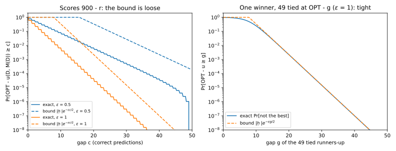
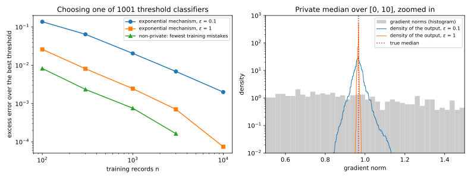
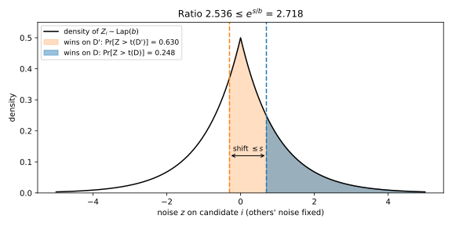
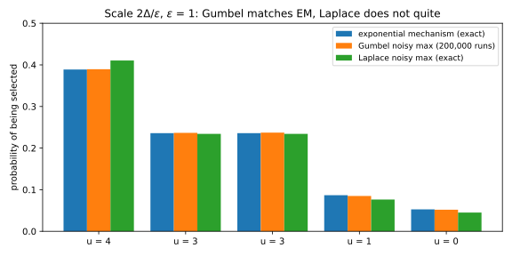
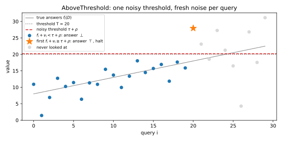

22 Selection: exponential mechanism, report-noisy-max, sparse vector
Many questions ask you to pick something rather than to compute a number, such as the best of 50 trained models or the first statistic to cross an alarm level. The answer is a name from a list, and adding noise to a name makes no sense. The Laplace mechanism of differential privacy (DP) could release a noisy score for every candidate. But if one record can move each of the \(|\mathcal R|\) candidates’ scores by 1, it moves the vector by \(|\mathcal R|\) in the \(\ell_1\) norm, so the noise would grow with the number of candidates.
This chapter shows that you never have to pay for the losers. The one idea is to release the position, not the values. Each mechanism adds noise to scores that are never published and reports only which candidate came out on top. The privacy proof asks how far one record can move the bar that the chosen candidate must clear. That bar is a maximum over the other candidates, and a maximum of numbers that each move by at most some amount moves by at most that amount, however many there are. So the number of candidates never enters the privacy cost, and enters the accuracy only through its logarithm.
The exponential mechanism samples a candidate with probability exponential in its score. Report-noisy-max adds noise to every score and names the winner. The sparse vector technique reports the first query of a stream above a threshold. The running example is model selection. Fifty models are scored on a private validation set of 1,000 examples, and model \(r\) gets \(900 - r\) right. A vote of six people checks the exponential mechanism by hand, and the sparse vector technique watches 1,000 counts for an alarm. Neighbours differ by adding or removing one record.
22.1 The exponential mechanism
You want to output a good candidate, where “good” is measured by a score that one record can move only a little. The natural private answer is a random candidate tilted toward high scores, and this section finds how much tilting a budget of \(\varepsilon\) allows.
A selection problem has a finite set \(\mathcal R\) of candidates, fixed before the data are seen, and a score function \(u(D, r)\) saying how good candidate \(r\) is on the dataset \(D\). Its sensitivity is the largest change of any one score between two neighbours, \[\Delta u = \max_{r \in \mathcal R}\ \max_{D \sim D'}\big|u(D, r) - u(D', r)\big|, \tag{22.1}\] written \(\Delta\) when the score is clear. McSherry and Talwar (2007) weighted each candidate exponentially in its score, at a rate that lets one record change every weight by at most \(e^{\varepsilon/2}\). Section A.5 in the appendices derives the mechanism and its utility from scratch.
Definition 22.1 (The exponential mechanism) For \(\varepsilon > 0\), the exponential mechanism \(M_E\) outputs candidate \(r\) with probability proportional to \(\exp\big(\varepsilon u(D, r)/(2\Delta)\big)\). The total weight \(Z(D)\) is the normalizer: \[\Pr[M_E(D) = r] = \frac{\exp\big(\frac{\varepsilon\,u(D, r)}{2\Delta}\big)}{Z(D)}, \qquad Z(D) = \sum_{s \in \mathcal R}\exp\Big(\frac{\varepsilon\,u(D, s)}{2\Delta}\Big). \tag{22.2}\] The scores are monotone if, for every pair of neighbours, either every score goes up from \(D\) to \(D'\) or every score goes down.
Counts under add/remove are monotone, because adding a record can only raise each count. A candidate’s probability is a weight divided by a total, and one record can change both, so the proof bounds each part. With monotone scores the two parts cannot both grow, which lets the 2 go.
Theorem 22.1 (Privacy of the exponential mechanism) The exponential mechanism is \(\varepsilon\)-DP. If the scores are monotone, the mechanism with weights \(\exp\big(\varepsilon u(D, r)/\Delta\big)\), without the 2, is also \(\varepsilon\)-DP.
Proof. The plan is to split the ratio of the probabilities of one candidate into its own weight and the normalizer, and bound each factor by sensitivity.
- Reduce to single outputs. The output set is finite, so by Proposition 18.1 it is enough that every single output’s probability changes by at most \(e^\varepsilon\) between neighbours. Fix \(D \sim D'\) and a candidate \(r\). Dividing the two probabilities of Equation 22.2 separates the two effects of one record: \[\frac{\Pr[M_E(D) = r]}{\Pr[M_E(D') = r]} = \exp\Big(\frac{\varepsilon\big(u(D, r) - u(D', r)\big)}{2\Delta}\Big)\cdot\frac{Z(D')}{Z(D)}. \tag{22.3}\]
- The candidate’s own weight. By sensitivity, \(u(D, r) - u(D', r) \le \Delta\), so the first factor is at most \(e^{\varepsilon/2}\).
- The normalizer. For every candidate \(s\), sensitivity gives \(u(D', s) \le u(D, s) + \Delta\), so each term of \(Z(D')\) is at most \(e^{\varepsilon/2}\) times the matching term of \(Z(D)\). Adding the terms gives \(Z(D') \le e^{\varepsilon/2}Z(D)\), and the product is at most \(e^\varepsilon\).
- Monotone scores. With weights \(e^{\varepsilon u/\Delta}\), each factor alone could reach \(e^\varepsilon\). If every score goes up from \(D\) to \(D'\), the first factor is at most 1 and the normalizer ratio at most \(e^\varepsilon\), by step 3 with \(\Delta\) for \(2\Delta\). If every score goes down, the first factor is at most \(e^\varepsilon\) and the normalizer ratio at most 1. Either way the product is at most \(e^\varepsilon\).
The 2 pays for two effects that can act together. One record can raise the score of \(r\) and lower its competitors’, so \(r\)’s weight grows while the normalizer shrinks. Without the 2, there are neighbours on which the ratio approaches \(e^{2\varepsilon}\). The mechanism is a softmax of the scores with temperature \(2\Delta/\varepsilon\), uniform as \(\varepsilon \to 0\) and the argmax as \(\varepsilon \to \infty\) (Figure 22.1).
The candidate set must not depend on the data, because the proof compares the same list on \(D\) and \(D'\). It may be infinite, though. On a continuous range the sum becomes an integral against a fixed base measure, such as length, and the two factors bound the ratio of densities at every point. Nothing else uses the structure of \(\mathcal R\), so the candidates can be models, split points, strings or graphs.

Example 22.1 Six people vote among options A, B, C and X, with counts \((3, 2, 1, 0)\) on the dataset \(D\). The neighbour \(D'\) has one more vote, for B, so \(\Delta = 1\). With \(\varepsilon = 1\) the weights are \(e^{u/2}\), and Table 22.1 shows the output of the chapter’s script (Section 22.8).
| Option | A | B | C | X |
|---|---|---|---|---|
| \(\Pr[M_E(D) = r]\) | 0.4551 | 0.2760 | 0.1674 | 0.1015 |
| \(\Pr[M_E(D') = r]\) | 0.3859 | 0.3859 | 0.1420 | 0.0861 |
| Ratio \(D/D'\) | 1.1790 | 0.7151 | 1.1790 | 1.1790 |
The weights on \(D\) sum to \(Z(D) = 9.8487\), and on \(D'\) the weight of B rises to \(e^{1.5}\), so \(Z(D') = 11.6121\). Only B’s score changed, so for A, C and X the ratio is the normalizer ratio \(1.1790\), below its bound \(e^{1/2} = 1.6487\). For B its own factor \(e^{-1/2}\) multiplies that, giving 0.7151. The largest privacy loss is \(|\ln 0.7151| = 0.3353\), a third of \(\varepsilon\), because only one factor is at work for each option. Counts are monotone, so the weights \(e^{u}\) are also allowed, with largest privacy loss 0.6585.
22.2 Utility of the exponential mechanism
Privacy came for free in the number of candidates, but accuracy does not, because more candidates means more bad ones to pick by accident. This section bounds how far below the best score the choice can fall. The idea is that a bad candidate weighs little next to the best one, whose weight is part of the normalizer.
Write \(\mathrm{OPT}(D) = \max_r u(D, r)\) for the best score, and call the gap the difference between it and the score of the chosen candidate.
Theorem 22.2 (Utility of the exponential mechanism) For every dataset \(D\) and every \(t > 0\), \[\Pr\Big[u(D, M_E(D)) \le \mathrm{OPT}(D) - \frac{2\Delta}{\varepsilon}(\ln |\mathcal R| + t)\Big] \le e^{-t}, \tag{22.4}\] and the expected gap is at most \(\frac{2\Delta}{\varepsilon}(\ln |\mathcal R| + 1)\). With monotone scores and weights \(e^{\varepsilon u/\Delta}\), \(2\Delta\) can be replaced by \(\Delta\).
Proof. The plan is to bound the bad candidates’ weight from above and the normalizer from below, solve for the gap, and integrate the tail. Write \(G\) for the gap. It is at least \(a\) exactly when the mechanism picks a candidate at least \(a\) below the best.
- Bad candidates are light. The weight grows with the score, so each such candidate weighs at most \(e^{\varepsilon(\mathrm{OPT} - a)/(2\Delta)}\).
- The normalizer is heavy. It includes the weight of an optimal candidate, so \(Z(D) \ge e^{\varepsilon\,\mathrm{OPT}/(2\Delta)}\).
- Divide. There are at most \(|\mathcal R|\) bad candidates, so dividing their total weight by the normalizer gives \[\Pr[G \ge a] \le |\mathcal R|\,e^{-\varepsilon a/(2\Delta)}. \tag{22.5}\]
- Solve for the gap. Setting the right side to \(e^{-t}\) and taking logarithms gives \(a = \frac{2\Delta}{\varepsilon}(\ln |\mathcal R| + t)\), which is Equation 22.4.
- Expectation. The mean of a non-negative quantity is the integral of its tail. Bound the tail by 1 up to \(a_0 = \frac{2\Delta}{\varepsilon}\ln |\mathcal R|\), where step 3 reaches 1, and by step 3 beyond. The second piece is an exponential integral equal to \(\frac{2\Delta}{\varepsilon}\), so \(\mathbb E[G] \le a_0 + \frac{2\Delta}{\varepsilon}\). With monotone weights the same steps run with \(\Delta\) for \(2\Delta\).
Doubling the candidates adds only \(\frac{2\Delta}{\varepsilon}\ln 2\) to the gap, and a lower bound shows that no \(\varepsilon\)-DP mechanism avoids the \(\ln|\mathcal R|\). The proof counted every candidate as bad at the largest bad weight and kept one term of the normalizer. Both are nearly exact when one best candidate faces 49 runners-up all exactly \(a\) below it (Figure 22.2, right). At \(\varepsilon = 1\) and \(a = 20\) the bound is 0.0023 and the truth 0.0022.
When scores are spread out, most bad candidates sit far below the best and are much lighter than the bound assumes. Figure 22.2 (left) shows the bound orders of magnitude above the truth for the 50 models.

Example 22.2 Release the best of the 50 models. The score counts correct predictions, so one validation example changes each score by at most 1 and \(\Delta = 1\). Table 22.2 shows the script’s output.
| \(\varepsilon\) | \(\Pr[\text{best}]\) | \(\mathbb E[\text{gap}]\) | Bound \(2(\ln 50 + 1)/\varepsilon\) | \(\mathbb E[\text{gap}]\), monotone weights |
|---|---|---|---|---|
| 0.1 | 0.0531 | 15.03 | 98.24 | 9.17 |
| 1 | 0.3935 | 1.54 | 9.82 | 0.58 |
| 5 | 0.9179 | 0.09 | 1.96 | 0.01 |
At \(\varepsilon = 1\) you lose 1.54 correct predictions on average, although you pick the best model only 39% of the time, because the mechanism mostly picks a near-tie. The tail bound with \(t = 3\) says the gap exceeds 13.82 with probability at most 0.0498, while the exact probability is \(9.12\times10^{-4}\). The scores are monotone, since one more example can only add correct predictions, and the weights \(e^{\varepsilon u}\) cut the expected gap at \(\varepsilon = 1\) from 1.54 to 0.58.
22.3 Applications of the exponential mechanism
To use the exponential mechanism, you choose a fixed candidate set, a score and its sensitivity. This section makes those choices three times. The first recovers the Laplace mechanism and shows a second way to drop the 2. The second picks a classifier from a finite class, and the third finds a median over an interval, which private training in Part 5 uses to set its clipping norm.
22.3.1 The Laplace mechanism
Take a query \(f\) of sensitivity \(\Delta\), let every real number \(h\) be a candidate, and score it by \(u(D, h) = -|f(D) - h|\). With length as the base measure, the density is proportional to \(e^{-\varepsilon|f(D) - h|/(2\Delta)}\), a Laplace density of scale \(2\Delta/\varepsilon\) centred at \(f(D)\). Changing the data only slides it along the line, so the normalizer cannot change and cannot work against any candidate.
Proposition 22.1 (A data-independent normalizer allows the full rate) If \(Z(D) = Z(D')\) for every pair of neighbours, the exponential mechanism with weights \(e^{\varepsilon u(D, h)/\Delta}\) is \(\varepsilon\)-DP. For the score \(-|f(D) - h|\) on the real line, the normalizer does not depend on the data, and the mechanism outputs \(f(D) + \mathrm{Lap}(\Delta/\varepsilon)\).
Proof.
- General claim. When \(Z(D) = Z(D')\), the ratio of the densities at \(h\) is the own factor of Theorem 22.1, now at most \(e^\varepsilon\), and integrating bounds every event.
- Sensitivity. By the triangle inequality, \(\big||f(D) - h| - |f(D') - h|\big| \le |f(D) - f(D')| \le \Delta\).
- The normalizer. Shifting the variable of integration by \(f(D)\) removes the data: \[Z(D) = \int_{-\infty}^\infty e^{-\varepsilon|f(D) - h|/\Delta}\,\mathrm dh = \int_{-\infty}^\infty e^{-\varepsilon|h|/\Delta}\,\mathrm dh = \frac{2\Delta}{\varepsilon}. \tag{22.6}\]
- It is the Laplace mechanism. A density proportional to \(e^{-\varepsilon|h - f(D)|/\Delta}\) is the \(\mathrm{Lap}(\Delta/\varepsilon)\) density shifted to \(f(D)\).
So monotone scores keep the two factors from both being large, and a data-independent normalizer makes the second one 1. A constant normalizer needs candidates that look the same after a shift and data that only shift the scores, which is why the Laplace mechanism needs only half the scale \(2\Delta/\varepsilon\) of the exponential mechanism.
22.3.2 A private learner
A learning problem has a finite class \(\mathcal H\) of classifiers and \(n\) labelled examples drawn independently from one unknown distribution. The training error \(\mathrm{err}_D(h)\) is the fraction of training examples that \(h\) gets wrong, and the population error \(\mathrm{err}(h)\) is its error probability on a fresh example. The learner of Kasiviswanathan, Lee, Nissim, Raskhodnikova and Smith (2008) is the exponential mechanism over \(\mathcal H\) with score \(-n\,\mathrm{err}_D(h)\), minus the number of mistakes. Its excess error over the best classifier has a sampling term, paid without privacy too, and a privacy term.
Theorem 22.3 (A private learner for a finite class) The learner is \(\varepsilon\)-DP. For a failure probability \(\beta\), with probability at least \(1 - 2\beta\) its choice \(\hat h\) satisfies \[\mathrm{err}(\hat h) \le \min_{h \in \mathcal H}\mathrm{err}(h) + 2\sqrt{\frac{\ln(2|\mathcal H|/\beta)}{2n}} + \frac{2\ln(|\mathcal H|/\beta)}{\varepsilon n}. \tag{22.7}\]
Proof. The plan is to get privacy from Theorem 22.1, then chain two bounds: the choice is nearly the best on the training set, and training errors are close to population errors.
- Privacy. One example changes every classifier’s number of mistakes by at most 1, so \(\Delta = 1\). This holds for any example, so privacy does not assume independence.
- Nearly the best on the training set. Equation 22.4 with \(t = \ln(1/\beta)\), divided by \(n\), gives \(\mathrm{err}_D(\hat h) \le \min_h\mathrm{err}_D(h) + c_E\) with \(c_E = 2\ln(|\mathcal H|/\beta)/(\varepsilon n)\), with probability at least \(1 - \beta\).
- Close to the population. A training error is an average of \(n\) independent indicators, so Hoeffding’s inequality (Concentration inequalities) bounds the chance that it strays by more than \(s\) by \(2e^{-2ns^2}\). A union bound over the class and setting the total to \(\beta\) give \(s = \sqrt{\ln(2|\mathcal H|/\beta)/(2n)}\) for all classifiers at once.
- Chain. Let \(h^\star\) have the smallest population error. On both events, step 3 moves to the training set, step 2 compares with \(h^\star\), and step 3 moves back: \[\mathrm{err}(\hat h) \le \mathrm{err}_D(\hat h) + s \le \mathrm{err}_D(h^\star) + c_E + s \le \mathrm{err}(h^\star) + c_E + 2s. \tag{22.8}\]
The sampling term falls like \(1/\sqrt n\) and the privacy term like \(1/n\), so for fine accuracy privacy costs little. The class must be finite. Alon, Livni, Malliaris and Moran (2019) showed that thresholds at every real number cannot be learned privately in the probably approximately correct (PAC) sense.
22.3.3 A private median
Take records \(x_1, \dots, x_n\) in an interval \([0, B]\) fixed before looking at the data, and score every point \(r\) by \(-\big|\#\{i : x_i < r\} - \#\{i : x_i > r\}\big|\). The absolute value is the imbalance of \(r\). Here the 2 stays, because a new record raises the scores on one side of the median and lowers them on the other. Assume no two records are equal, and write \(x_{(1)} < \dots < x_{(n)}\) for them in increasing order. They cut the interval into \(n + 1\) pieces, with \(x_{(0)} = 0\) and \(x_{(n+1)} = B\) as end points. Write \(\ell_j\) for the length of the piece from \(x_{(j)}\) to \(x_{(j+1)}\), and \(\ell^\star\) for the total length of the best pieces.
Proposition 22.2 (The private median) Under add/remove the score has sensitivity 1, and the exponential mechanism with length as base measure is \(\varepsilon\)-DP. It picks piece \(j\) with probability proportional to \(\ell_je^{-\varepsilon|2j - n|/2}\), then a uniform point inside it. For even \(n\) and any \(t > 0\), with probability at least \(1 - e^{-t}\) its output \(r\) satisfies \[\big|\#\{i : x_i < r\} - \#\{i : x_i > r\}\big| \le \frac2\varepsilon\Big(\ln\frac{B}{\ell^\star} + t\Big). \tag{22.9}\] For odd \(n\) the right side gains 1, because no point splits the data evenly.
Proof.
- Sensitivity. One record changes the count below \(r\) or the count above it by 1, or neither, so the imbalance moves by at most 1. Theorem 22.1 gives privacy.
- Sampling. Inside piece \(j\), exactly \(j\) records lie below \(r\) and \(n - j\) above, so the score is \(-|2j - n|\) and the density is flat. The piece’s probability is its length times its weight, over \(Z\).
- Utility. Repeat Theorem 22.2 with lengths for counts. The points at least \(a\) below the best have total length at most \(B\), so they weigh at most \(Be^{\varepsilon(\mathrm{OPT} - a)/2}\), while the best pieces weigh \(\ell^\star e^{\varepsilon\,\mathrm{OPT}/2}\). Their ratio \((B/\ell^\star)e^{-\varepsilon a/2}\), set to \(e^{-t}\), bounds the imbalance by the best imbalance plus \(\frac2\varepsilon(\ln(B/\ell^\star) + t)\). The best imbalance is 0 for even \(n\) and 1 for odd \(n\).
The range enters only through \(\ln(B/\ell^\star)\), so a generous range is cheap, but it must be fixed without looking at the data, as a clamping range must be in Sensitivity. The guarantee controls the output’s rank, not its value. For the quantile \(q\), the score \(-\big|(1 - q)\#\{x_i < r\} - q\,\#\{x_i > r\}\big|\) works the same way.

Example 22.3 A threshold classifier. The data are \(x\) uniform on \([0, 1]\), labelled 1 when \(x \ge 0.3\), with each label flipped with probability 0.1. The class holds the 1,001 thresholds \(0, 0.001, \dots, 1\). Over 200 datasets of \(n = 1{,}000\), the private learner’s average excess error is 0.0024 at \(\varepsilon = 1\) and 0.0206 at \(\varepsilon = 0.1\), against 0.0008 without privacy (Figure 22.3, left). At \(\beta = 0.05\), Equation 22.7 has a sampling term of 0.1456 and a privacy term of 0.0198, both far above the observed errors, because the union bound guards against all 1,001 classifiers at once.
A clipping norm. Take 1,000 gradient norms drawn from a lognormal distribution with median 1, capped at \(B = 10\). Their median is 0.9804. At \(\varepsilon = 1\) the private median is on average 0.0013 from it, and 0.0157 at \(\varepsilon = 0.1\) (Figure 22.3, right). With \(t = \ln 20\), Equation 22.9 allows an imbalance of 26.4 at \(\varepsilon = 1\) and 264.5 at \(\varepsilon = 0.1\).
22.4 Report-noisy-max
The obvious way to select privately is to add independent noise to every score and report only the index of the largest. This section proves that counts then need noise of scale \(1/\varepsilon\), for any number of candidates, with the bar argument of the opening. Its three tools, used again for the sparse vector technique, come first as lemmas.
The proof looks at one candidate \(i\) and freezes the noise of all the others. The first lemma says that freezing is allowed when the frozen noise is drawn the same way on both datasets.
Lemma 22.1 (Fix the data-independent randomness) Let \(W\) be randomness inside a mechanism whose distribution does not depend on the data, and \(A\) an event. If \(\Pr[A \mid D, W = w] \le e^\varepsilon\Pr[A \mid D', W = w]\) for every \(w\), then \(\Pr[A \mid D] \le e^\varepsilon\Pr[A \mid D']\).
Proof. Both probabilities average the conditional ones (a sum, or an integral for continuous noise) with the same weights \(\Pr[W = w]\), because \(W\) does not depend on the data. Bounding each term of the first average by \(e^\varepsilon\) times the matching term of the second bounds the averages.
Once the other noise is frozen, candidate \(i\) wins when its own noise clears a bar built from a maximum over the others. The second lemma bounds how far one record moves that maximum.
Lemma 22.2 (A maximum moves no more than its terms) If \(|v'_j - v_j| \le \Delta\) for every \(j\), then \(|\max_jv'_j - \max_jv_j| \le \Delta\), for any number of terms. If every \(v'_j - v_j\) lies in \([0, \Delta]\), so does \(\max_jv'_j - \max_jv_j\).
Proof. Raising every term to its highest value gives \(\max_jv'_j \le \max_jv_j + \Delta\), and swapping \(v\) and \(v'\) gives the other side. When every term moves up, the maximum cannot fall.
The third lemma pays for the move. The Laplace density falls by \(e^{-1/b}\) per unit of distance from 0, so sliding it by \(s\) changes its height anywhere by at most \(e^{|s|/b}\).
Lemma 22.3 (Moving a Laplace threshold) For \(Z \sim \mathrm{Lap}(b)\) and all real \(t\) and \(s\), \[\Pr[Z > t - s] \le e^{|s|/b}\,\Pr[Z > t]. \tag{22.10}\]
Proof.
- Compare densities. With \(p(z) = \frac1{2b}e^{-|z|/b}\), the ratio \(p(z - s)/p(z)\) is \(e^{(|z| - |z - s|)/b}\). Two points \(s\) apart differ in distance from 0 by at most \(|s|\), so \(p(z - s) \le e^{|s|/b}p(z)\).
- Change variables. Substituting \(z \mapsto z - s\) writes \(\Pr[Z > t - s]\) as \(\int_t^\infty p(z - s)\,\mathrm dz\), which step 1 bounds by \(e^{|s|/b}\Pr[Z > t]\).
With \(b = s = 1\), the ratio of the two tails is 1.6321 at \(t = 0\) and exactly \(e = 2.7183\) at \(t = 2\), where \(t\) and \(t - s\) both lie above 0 and each tail is \(\frac12e^{-x/b}\).
Theorem 22.4 (Report-noisy-max) Report-noisy-max adds independent \(Z_r \sim \mathrm{Lap}(b)\) to every score and outputs \(M_N(D) = \arg\max_r\big(u(D, r) + Z_r\big)\). With \(b = 2\Delta/\varepsilon\) it is \(\varepsilon\)-DP, and with monotone scores \(b = \Delta/\varepsilon\) suffices (Dwork and Roth, Claim 3.9). With probability at least \(1 - \beta\), its gap is at most \(2b\ln(|\mathcal R|/\beta)\).
Proof. The plan is to freeze the other noise, write the output as one Laplace noise clearing a bar, bound how far the bar moves, and pay for the move.
- Freeze the others. Fix \(D \sim D'\), a candidate \(i\) and the noise \(z_{-i}\) of the others. By Lemma 22.1 it is enough to bound the conditional probability that \(i\) wins.
- A bar. Candidate \(i\) wins on \(D\) exactly when \(Z_i > t(D)\), with \[t(D) = \max_{j \ne i}\big(u(D, j) + z_j\big) - u(D, i). \tag{22.11}\]
- The bar moves by at most \(2\Delta\). Each term \(u(\cdot, j) + z_j\) moves by at most \(\Delta\), so the maximum does too by Lemma 22.2, however many terms it has. The score \(u(\cdot, i)\) adds another \(\Delta\).
- Monotone scores. If every score goes up by an amount in \([0, \Delta]\), then by Lemma 22.2 so does the maximum, and their difference lies in \([-\Delta, \Delta]\). The same holds when every score goes down.
- Pay. Lemma 22.3 with \(s = t(D) - t(D')\) gives a factor at most \(e^{2\Delta/b} = e^\varepsilon\) in general and \(e^{\Delta/b} = e^\varepsilon\) for monotone scores. Lemma 22.1 removes the conditioning, and Proposition 18.1 gives \(\varepsilon\)-DP.
- Accuracy. By the accuracy bound of Theorem 20.1, a union bound over the candidates’ Laplace tails, every \(|Z_r|\) is below \(x = b\ln(|\mathcal R|/\beta)\) with probability at least \(1 - \beta\). Then the winner’s noisy score beat that of a best candidate, so \(u(D, i) + x > \mathrm{OPT} - x\), and the gap is below \(2x\).
Figure 22.4 draws steps 2 to 5 with \(b = 1\) and a bar lowered from 0.7 by 1. The winning probability rises from 0.2483 to 0.6296, a ratio of 2.5357, below \(e\) because the lowered bar left the tail where Lemma 22.3 is exact.

The losers enter only through one maximum in step 3, which is why they cost nothing. The 2 is needed in general because competitors can rise while \(i\) falls. A histogram under replace neighbours, where one record is swapped for another, does exactly that, so it is not monotone.
Release only the index, because the winning noisy score would publish \(Z_i\), the noise the proof averages over. Neither Laplace report-noisy-max nor the exponential mechanism always selects better.
Example 22.4 On the vote of Table 22.1 the counts are monotone, so \(b = 1\) is allowed at \(\varepsilon = 1\). The script’s exact winning probabilities give a largest privacy loss of 0.6674, and 0.3626 with \(b = 2\). On the 50 models at \(\varepsilon = 1\), the general mechanism (\(b = 2\)) picks the best with probability 0.4241, against 0.3935 for the exponential mechanism, and has expected gap 1.40 against 1.54. The monotone one (\(b = 1\)) has expected gap 0.54. The accuracy bound at \(\beta = 0.05\), 27.63 for \(b = 2\), is loose for spread-out scores.
22.5 Gumbel noise: report-noisy-max is the exponential mechanism
Report-noisy-max with Laplace noise is close to the exponential mechanism but not equal to it. With Gumbel noise the noisy argmax gives exactly the probabilities of Equation 22.2, which is the Gumbel-max trick. The Gumbel distribution with scale \(\kappa\), \(\mathrm{Gumbel}(\kappa)\), has cumulative distribution function (CDF) \(\Pr[G \le g] = \exp(-e^{-g/\kappa})\), and NumPy’s rng.gumbel(0, kappa) samples it.
Theorem 22.5 (The Gumbel-max trick) For scores \(u_r\) and independent \(G_r \sim \mathrm{Gumbel}(\kappa)\), \[\Pr\Big[\arg\max_r\big(u_r + G_r\big) = i\Big] = \frac{e^{u_i/\kappa}}{\sum_r e^{u_r/\kappa}}. \tag{22.12}\] With \(\kappa = 2\Delta/\varepsilon\) this is the exponential mechanism.
Proof. Conditioning on the winner’s noise lets you multiply the chances that each other candidate falls short, and the integral can then be done exactly. Dividing everything by \(\kappa\) keeps the argmax, so take \(\kappa = 1\), with CDF \(H(g) = \exp(-e^{-g})\) and density \(H'(g) = e^{-g}H(g)\).
- Condition. If \(G_i = g\), candidate \(i\) wins when every other \(G_j < g + u_i - u_j\). These events are independent, so \[\Pr[i \text{ wins}] = \int_{-\infty}^\infty H'(g)\prod_{j \ne i}H(g + u_i - u_j)\,\mathrm dg. \tag{22.13}\]
- Collect. Each factor is \(\exp(-e^{-g}e^{u_j - u_i})\), and the \(H(g)\) inside \(H'(g)\) is the factor for \(j = i\). The product is \(\exp(-e^{-g}A)\), with \(A = e^{-u_i}\sum_je^{u_j}\).
- Substitute \(w = e^{-g}\). The factor \(e^{-g}\) and \(\mathrm dg\) together are \(-\mathrm dw\), and the minus sign flips the limits, so \[\Pr[i \text{ wins}] = \int_0^\infty e^{-wA}\,\mathrm dw = \frac1A = \frac{e^{u_i}}{\sum_je^{u_j}}. \tag{22.14}\]
So the Gumbel noisy max inherits the privacy of Theorem 22.1, and Section J.7 proves it directly too, because the Gumbel tail obeys the bound of Lemma 22.3 and the bar argument of Theorem 22.4 then applies. It works in score units, while \(e^{\varepsilon u/(2\Delta)}\) overflows for scores in the thousands. Taking the \(c\) largest of \(u_r + G_r\) at once has the distribution of \(c\) exponential mechanisms run in turn without replacement, at \(c\varepsilon\) (Durfee and Rogers 2019; Section J.6 derives it).

Example 22.5 Take five candidates with scores \((4, 3, 3, 1, 0)\) and noise scale 2, which is \(\varepsilon = 1\) and \(\Delta = 1\). Table 22.3 and Figure 22.5 compare the three mechanisms.
| Candidate score | 4 | 3 | 3 | 1 | 0 |
|---|---|---|---|---|---|
| Exponential mechanism, exact | 0.3889 | 0.2359 | 0.2359 | 0.0868 | 0.0526 |
| Gumbel noisy max, \(10^6\) runs | 0.3891 | 0.2351 | 0.2362 | 0.0871 | 0.0525 |
| Laplace noisy max, exact | 0.4105 | 0.2341 | 0.2341 | 0.0764 | 0.0449 |
The Gumbel frequencies are within 0.0008 of the exponential mechanism, about the sampling error of a million draws. The Laplace noisy max is at total variation distance 0.0216, the extra probability it puts on the top candidate.
22.6 The sparse vector technique
Now the queries arrive one at a time, and you care only about the first one above a threshold. Answering each with the Laplace mechanism would cost \(\varepsilon\) per query. Report-noisy-max needs the whole list in advance, but here each query must be answered before the next is seen. The sparse vector technique (Dwork, Naor, Reingold, Rothblum and Vadhan 2009) compares each query with one noisy threshold and pays only for the one above it. Its basic form is Algorithm 1 of Dwork and Roth (2014).
Definition 22.2 (AboveThreshold) The input is a dataset \(D\), a stream of \(k\) queries \(f_i\) of sensitivity \(\Delta\), possibly adaptive, a threshold \(\tau\) and budgets \(\varepsilon_1, \varepsilon_2 > 0\). Draw \(\rho \sim \mathrm{Lap}(\Delta/\varepsilon_1)\) once. For each query, draw fresh \(\nu_i \sim \mathrm{Lap}(2\Delta/\varepsilon_2)\). If \(f_i(D) + \nu_i \ge \tau + \rho\), output \(\top\) (“above”) and halt; otherwise output \(\bot\) (“below”). The output \(\bot^{j-1}\top\) stops at query \(j\).
The output “stop at query \(j\)” says that the noisy threshold is above every earlier noisy answer and at or below the \(j\)-th. The proof slides \(\rho\) by however much the largest earlier answer moved, which costs at most \(\Delta\) by Lemma 22.2, and slides \(\nu_j\) to keep query \(j\) in place, which costs at most \(2\Delta\).
Theorem 22.6 (AboveThreshold) AboveThreshold is \((\varepsilon_1 + \varepsilon_2)\)-DP for any number of queries (Dwork and Roth, Theorem 3.23; Lyu, Su and Li 2017). For monotone queries, which all move the same way between neighbours as counts under add/remove do, \(\nu_i \sim \mathrm{Lap}(\Delta/\varepsilon_2)\) suffices. With \(\varepsilon_1 = \varepsilon_2 = \varepsilon/2\) and \(k\) fixed before the run, with probability at least \(1 - \beta\) every \(\bot\) query has \(f_i(D) < \tau + \alpha\) and the \(\top\) query has \(f_j(D) > \tau - \alpha\), where \[\alpha = \frac{8\Delta\big(\ln k + \ln(2/\beta)\big)}{\varepsilon}. \tag{22.15}\]
Proof. The plan is to freeze the earlier noise, write the output as two conditions on \((\rho, \nu_j)\), shift both noises to turn the conditions for \(D\) into those for \(D'\), and pay with the Laplace density; accuracy then comes from Laplace tails. Fix \(D \sim D'\) and write \(g(D) = \max_{i < j}\big(f_i(D) + \nu_i\big)\).
- Freeze. Fix \(\nu_1, \dots, \nu_{j-1}\), which do not depend on the data, and use Lemma 22.1. Adaptive queries are then fixed too, since they depend only on earlier answers, all \(\bot\).
- Two conditions. The earlier queries say \(\bot\) exactly when \(g(D) < \tau + \rho\), and query \(j\) says \(\top\) when \(f_j(D) + \nu_j \ge \tau + \rho\). With noise densities \(p_\rho\) and \(p_\nu\), the output has probability \[\iint p_\rho(\rho)\,p_\nu(\nu)\,\mathbf 1\big[g(D) < \tau + \rho\big]\,\mathbf 1\big[f_j(D) + \nu \ge \tau + \rho\big]\,\mathrm d\rho\,\mathrm d\nu. \tag{22.16}\]
- Shift both noises. Substitute \(\rho = \rho' + g(D) - g(D')\) and \(\nu = \nu' + \big(g(D) - g(D')\big) - \big(f_j(D) - f_j(D')\big)\). After cancelling, the indicators are those for \(D'\), and a translation leaves \(\mathrm d\rho\,\mathrm d\nu\) unchanged, so only the densities are evaluated at shifted points.
- Size of the shifts. Each term of \(g\) moves by at most \(\Delta\), so \(|g(D) - g(D')| \le \Delta\) by Lemma 22.2, whatever \(j\) is. The shift of \(\nu\) is a difference of two such terms, at most \(2\Delta\).
- Pay. By step 1 of the proof of Lemma 22.3, a Laplace density of scale \(b\) changes by at most \(e^{|x|/b}\) when its argument moves by \(x\). That is \(e^{\varepsilon_1}\) for \(\rho\) and \(e^{\varepsilon_2}\) for \(\nu\). The output \(\bot^k\) has only the first indicator and costs \(e^{\varepsilon_1}\). Lemma 22.1 and Proposition 18.1 conclude.
- Monotone queries. If all queries move the same way, \(g\) and \(f_j\) move the same way by Lemma 22.2, so the shift of \(\nu\) is at most \(\Delta\).
- Accuracy. With the equal split, the Laplace tail of Theorem 20.1 gives \(\Pr[|\rho| \ge \alpha/2] = e^{-\alpha\varepsilon/(4\Delta)}\), and a union bound over the \(k\) query noises gives \(k\,e^{-\alpha\varepsilon/(8\Delta)}\). Setting the second to \(\beta/2\) gives Equation 22.15, and the first is then smaller. The union bound needs \(k\) fixed in advance, because the index where the run stops depends on the noise.
- Read off. If all noises are below \(\alpha/2\), a \(\bot\) means \(f_i < \tau + \rho - \nu_i < \tau + \alpha\), and the \(\top\) means \(f_j \ge \tau + \rho - \nu_j > \tau - \alpha\).
To find \(c\) queries above the threshold, the algorithm Sparse of Dwork and Roth restarts AboveThreshold with fresh threshold noise after each \(\top\) and halts after the \(c\)-th. Each run gets a share of the budget and of the failure probability.
Corollary 22.1 (Sparse: c answers above) With \(c\) runs at budget \(\varepsilon/c\) each, Sparse is \(\varepsilon\)-DP, and with probability \(1 - \beta\) all its answers are accurate to within \[\alpha_c = \frac{8c\Delta\big(\ln k + \ln(2c/\beta)\big)}{\varepsilon}. \tag{22.17}\] With runs at the largest \(\varepsilon_0\) whose \(c\)-fold advanced composition (Advanced and optimal composition) is at most \(\varepsilon\) at slack \(\delta\), it is \((\varepsilon, \delta)\)-DP, with margin Equation 22.15 at \(\varepsilon_0\) and \(\beta/c\).
Proof.
- Privacy. The runs form an adaptive composition of \(c\) AboveThresholds, so basic composition at \(\varepsilon/c\) gives \(\varepsilon\), and advanced composition at \(\varepsilon_0\) gives \((\varepsilon, \delta)\).
- Accuracy. Apply Theorem 22.6 to each run at its budget and failure probability \(\beta/c\), and take a union bound over the runs.
The advanced margin grows like \(\sqrt c\) instead of \(c\).
The \(\bot\) answers are free because step 4 pays for all of them through one maximum, whether there are 3 or 3 million. The run must halt because that payment covers one \(\top\), and each further \(\top\) against the same \(\rho\) needs its own shift. Query noise \(\mathrm{Lap}(2c\Delta/\varepsilon_2)\) pays for \(c\) shifts at once (Section J.5). The split of \(\varepsilon\) matters only for accuracy. The proof is tight in the limit. On the pair of \(2m\) queries built in Section 22.7, the largest privacy loss is 0.994011, 0.999981 and 1.000000 at \(m = 10\), 20 and 40. Figure 22.6 shows one run.

Example 22.6 You monitor \(k = 1000\) counts (\(\Delta = 1\)) with threshold \(\tau = 500\) at \(\varepsilon = 1\). With \(\beta = 0.05\), Equation 22.15 gives \(\alpha = 8(\ln 1000 + \ln 40) = 84.77\). In the script’s stream every count is 400, below \(500 - \alpha\), except query 700, at 600, above \(500 + \alpha\). So with probability at least 0.95 the output is query 700. In 10,000 simulated runs it always was, and the margin the noises needed had a 95% quantile of 78.59, so the union bound is nearly tight. For the first \(c\) alarms, Equation 22.17 gives a margin of 1,032 at \(c = 10\). Advanced composition at \(\delta = 10^{-6}\) gives the worse 1,746 there, and wins only at \(c = 100\), with 6,506 against 12,161.
22.7 When the sparse vector technique goes wrong
The sparse vector technique is easy to break. Lyu, Su and Li (2017) found several published variants, each a harmless-looking optimization of AboveThreshold, that were not private at all (Table 22.4). Each removes an ingredient that one step of the proof of Theorem 22.6 needs, and finding that step is how to review an implementation.
| Variant (as numbered by Lyu, Su & Li) | What it changes | Privacy shown by Lyu, Su & Li |
|---|---|---|
| Algorithm 1 (theirs); Algorithm 2 (Dwork & Roth) | Correct, with \(c\) answers above | \(\varepsilon\) |
| Algorithm 3 (Roth’s 2011 lecture notes) | Outputs the noisy value \(f_i + \nu_i\) for each \(\top\) | \(\infty\) |
| Algorithm 4 (Lee & Clifton 2014) | Query noise does not grow with \(c\) | \(\frac{1 + 6c}{4}\varepsilon\) |
| Algorithm 5 (Stoddard et al. 2014) | No noise on the queries | \(\infty\) |
| Algorithm 6 (Chen et al. 2015) | Never halts | \(\infty\) |
The no-halt variant keeps the noise of AboveThreshold at the equal split but answers every query. One pair of neighbours and one output with too large a ratio suffice to break it. The pair below makes each answer of \(\bot^m\top^m\) a little more likely under \(D\), and without a halt the \(2m\) factors multiply. Take \(\Delta = 1\) and \[f(D) = (\underbrace{0, \dots, 0}_m, \underbrace{1, \dots, 1}_m), \qquad f(D') = (\underbrace{1, \dots, 1}_m, \underbrace{0, \dots, 0}_m). \tag{22.18}\]
Proposition 22.3 (Without the halt, the loss is unbounded) On this pair, the no-halt variant has \[\ln\frac{\Pr[\bot^m\top^m \mid D]}{\Pr[\bot^m\top^m \mid D']} \ge \frac{m\varepsilon}{4}, \tag{22.19}\] so it is not \(\varepsilon'\)-DP for any \(\varepsilon'\).
Proof. Once the shared threshold is fixed the answers are independent, so the plan is to fix it, multiply, bound the ratio at every threshold, and average. Let \(b = 4/\varepsilon\) be the query-noise scale \(2\Delta/\varepsilon_2\) at the equal split, \(F\) its Laplace CDF and \(\bar F = 1 - F\).
- Fix the threshold. Given \(\tau + \rho = t\), a query of value \(f\) says \(\bot\) with probability \(F(t - f)\) and \(\top\) with probability \(\bar F(t - f)\).
- Multiply. Under \(D\) the output needs \(m\) zeros below and \(m\) ones above, and under \(D'\) the values swap: \[a_D(t) = F(t)^m\,\bar F(t - 1)^m, \qquad a_{D'}(t) = F(t - 1)^m\,\bar F(t)^m. \tag{22.20}\]
- A power. Their ratio is \(\omega(t)^m\), with \(\omega(t) = \frac{F(t)}{F(t - 1)}\cdot\frac{\bar F(t - 1)}{\bar F(t)}\), and both factors are at least 1.
- Bound \(\omega\). The CDF is \(\frac12e^{x/b}\) for \(x \le 0\) and the survival function \(\frac12e^{-x/b}\) for \(x \ge 0\). So the first factor is \(e^{1/b}\) when \(t \le 0\), and the second is \(e^{1/b}\) when \(t \ge 1\). For \(0 < t < 1\), \(F(t) \ge \frac12\) makes the first factor at least \(e^{(1 - t)/b}\), and likewise the second is at least \(e^{t/b}\). So \(\omega(t) \ge e^{1/b}\) at every threshold.
- Average. The threshold has the same distribution under both datasets, so averaging \(a_D \ge e^{m/b}a_{D'}\) gives Equation 22.19. The pair exists for every \(m\), so the loss is unbounded.
AboveThreshold’s proof fails here because each \(\top\) after the first needs its own shift, and the halt is what limits them to one. Without query noise (Algorithm 5), even the halting version fails, because two queries can give an output that is impossible on \(D'\). Publishing \(f_j + \nu_j\) (Algorithm 3) releases the noise the proof integrates over. The no-halt variant adds as much noise per query as AboveThreshold, so a reviewer who checks only noise scales will not find the bug. An audit will find it. Under \(\varepsilon\)-DP every test, a rule that says “\(D\)” or “\(D'\)” from the output, fires at most \(e^\varepsilon\) times as often under \(D\) as under \(D'\), by the definition, and a simple sign test breaks that (Figure 22.7, right).

Example 22.7 Table 22.5 gives the script’s exact values for \(\varepsilon = 1\) and \(\tau = 0\): the largest loss over all outputs for AboveThreshold, and the loss of \(\bot^m\top^m\) for the no-halt variant.
| \(m\) | 1 | 5 | 10 | 20 | 40 |
|---|---|---|---|---|---|
| AboveThreshold, largest loss over outputs | 0.3958 | 0.8998 | 0.9940 | 1.0000 | 1.0000 |
| No halt, loss of \(\bot^m\top^m\) | 0.3958 | 2.0985 | 4.3220 | 8.8741 | 18.1246 |
| Lower bound \(m\varepsilon/4\) | 0.25 | 1.25 | 2.50 | 5.00 | 10.00 |
At \(m = 1\) the two coincide, because AboveThreshold halts after the \(\top\) anyway. Then the no-halt loss grows by about 0.45 nats (units of natural logarithm) per pair of queries. The lower bound is loose by a factor of a little under 2, because step 4 bounded \(\omega\) at its smallest. The sign test asks whether the second half has more \(\top\) answers. Its log-ratio is 0.77 at \(m = 10\) and 1.40 at \(m = 40\), so from \(m = 40\) on it alone proves that the variant is not 1-DP.
22.8 Code
The script code/selection.py computes every number in this chapter and draws every figure. Exponential-mechanism probabilities are exact sums, the noisy max and the sparse vector technique are integrated on a grid over one noise variable, and simulations check the integrals. From the repository root:
uv run python code/part03-dp-foundations/selection.py| Experiment | Result |
|---|---|
| Laplace threshold shift, \(b = s = 1\) | Ratio 1.6321 at \(t = 0\), 2.5357 at \(t = 0.7\), 2.7183 at \(t = 1\) and \(t = 2\) |
| Exponential mechanism on the vote, \(\varepsilon = 1\) | Table 22.1; normalizer ratio 1.1790; largest loss 0.3353 (monotone weights: 0.6585) |
| Exponential mechanism on 50 models | Table 22.2; \(\Pr[\text{gap} \ge 13.82] = 9.12\times10^{-4}\) against \(e^{-3} = 0.0498\); tied profile at gap 20: 0.0022 against 0.0023 |
| Laplace report-noisy-max, 50 models, \(\varepsilon = 1\) | \(b = 2\): \(\Pr[\text{best}]\) 0.4241, expected gap 1.40 (simulated 1.39). \(b = 1\): 0.6463 and 0.54 |
| Laplace report-noisy-max on the vote, \(b = 1\) | Largest loss 0.6674 (\(b = 2\): 0.3626) |
| Gumbel-max, five candidates | Within 0.0008 of the exponential mechanism over \(10^6\) runs; Laplace at total variation 0.0216 |
| AboveThreshold, \(k = 1000\), \(\beta = 0.05\) | \(\alpha = 84.77\); simulated 95% quantile 78.59; alarm stream correct in 10,000 of 10,000 runs |
| AboveThreshold against no halt | Table 22.5; sign test log-ratios 0.77, 1.40, 2.63 at \(m = 10, 40, 160\) |
| Sparse, \(k = 1000\), \(\beta = 0.05\) | Margin 1,032 (\(c = 10\)) and 12,161 (\(c = 100\)); with advanced composition at \(\delta = 10^{-6}\), 1,746 and 6,506 |
| Threshold learner, \(n = 1000\) | Excess error 0.0024 (\(\varepsilon = 1\)), 0.0206 (\(\varepsilon = 0.1\)), 0.0008 non-private; records for \(\alpha = 0.05\): 33,913 (sampling), 793 (privacy at \(\varepsilon = 1\)) |
| Private median of 1,000 gradient norms | Median 0.9804; mean distance 0.0013 (\(\varepsilon = 1\)) and 0.0157 (\(\varepsilon = 0.1\)); imbalance bound 26.4 and 264.5 |
tests/test_selection.py checks that the output still matches.
22.9 Summary
| Result | Statement | Use |
|---|---|---|
| Theorem 22.1 | Pick \(r\) with probability \(\propto e^{\varepsilon u(D, r)/(2\Delta)}\); \(\varepsilon\)-DP, and \(e^{\varepsilon u/\Delta}\) for monotone scores | Model selection; private multiplicative weights; fix the candidates first |
| Theorem 22.2 | Gap \(\le \frac{2\Delta}{\varepsilon}(\ln \lvert\mathcal R\rvert + t)\) w.p. \(1 - e^{-t}\) | Candidates cost \(\ln\lvert\mathcal R\rvert\) in accuracy, nothing in privacy |
| Proposition 22.1 | A data-independent normalizer allows \(e^{\varepsilon u/\Delta}\) | Why the Laplace mechanism needs no factor 2 |
| Theorem 22.3 | Excess error \(\le 2\sqrt{\ln(2\lvert\mathcal H\rvert/\beta)/(2n)} + 2\ln(\lvert\mathcal H\rvert/\beta)/(\varepsilon n)\) | A finite class from \(O(\ln\lvert\mathcal H\rvert)\) records |
| Proposition 22.2 | Piece \(j\) w.p. \(\propto \ell_je^{-\varepsilon\lvert 2j - n\rvert/2}\); imbalance \(\le \frac2\varepsilon(\ln(B/\ell^\star) + t)\) | A private clipping norm or quantile; fix the range first |
| Lemma 22.1, Lemma 22.2, Lemma 22.3 | Freeze data-independent noise; a maximum moves by at most \(\Delta\); a shifted Laplace tail changes by at most \(e^{\lvert s\rvert/b}\) | Every noisy-max proof |
| Theorem 22.4 | \(\arg\max_r(u + \mathrm{Lap}(2\Delta/\varepsilon))\) is \(\varepsilon\)-DP; \(\mathrm{Lap}(\Delta/\varepsilon)\) for monotone scores | Vote counts in private prediction; release the index only |
| Theorem 22.5 | A Gumbel noisy max is the exponential mechanism | Stable sampling; top-\(c\) at \(c\varepsilon\) |
| Theorem 22.6 | AboveThreshold is \((\varepsilon_1 + \varepsilon_2)\)-DP for any number of \(\bot\); margin Equation 22.15 | Monitoring; the reusable holdout of adaptive data analysis |
| Corollary 22.1 | \(c\) runs: margin Equation 22.17, or \(\sqrt c\) growth with advanced composition | Advanced composition once \(c \gg 2\ln(1/\delta)\) |
| Proposition 22.3 | Without the halt the loss grows like \(m\varepsilon/4\) | Draw fresh query noise, keep one threshold per run, halt, never publish noisy values |
22.10 References
- Dwork & Roth, The Algorithmic Foundations of Differential Privacy (2014), §3.3 (report-noisy-max, Claim 3.9), §3.4 (the exponential mechanism, Theorems 3.10 and 3.11) and §3.6 (the sparse vector technique: AboveThreshold, Theorems 3.23 and 3.24, and the algorithms Sparse and NumericSparse, with Theorem 3.26 for their accuracy). The proofs above follow theirs. Their version of Sparse with \(\delta > 0\) uses a closed-form per-run budget where this chapter solves for the largest one.
- McSherry & Talwar, “Mechanism Design via Differential Privacy” (FOCS 2007). The exponential mechanism, with the continuous version and its use in auctions.
- Lyu, Su & Li, “Understanding the Sparse Vector Technique for Differential Privacy” (Proceedings of the VLDB Endowment, 2017). The general algorithm with \(c\) answers above and a budget split, the monotone improvement, the survey of incorrect variants in Table 22.4, and the optimal split. The best single source on the technique.
- Dwork, Naor, Reingold, Rothblum & Vadhan, “On the Complexity of Differentially Private Data Release” (STOC 2009). Where the sparse vector idea first appears.
- Kasiviswanathan, Lee, Nissim, Raskhodnikova & Smith, “What Can We Learn Privately?” (FOCS 2008; SIAM Journal on Computing 2011). The private learner of Equation 22.7: any finite class is learnable privately with \(O(\ln|\mathcal H|)\) records.
- Alon, Livni, Malliaris & Moran, “Private PAC Learning Implies Finite Littlestone Dimension” (STOC 2019). Why the class must be finite: thresholds over an infinite domain cannot be learned privately.
- Smith, “Privacy-Preserving Statistical Estimation with Optimal Convergence Rates” (STOC 2011), and Gillenwater, Joseph & Kulesza, “Differentially Private Quantiles” (ICML 2021). The exponential mechanism for medians and quantiles over an interval, sampled exactly piece by piece.
- Dwork, Feldman, Hardt, Pitassi, Reingold & Roth, “The Reusable Holdout: Preserving Validity in Adaptive Data Analysis” (Science 2015). Thresholdout, an application of the sparse vector technique to validation sets reused across many experiments, treated in Adaptive data analysis.
- Durfee & Rogers, “Practical Differentially Private Top-k Selection with Pay-what-you-get Composition” (NeurIPS 2019). The one-shot Gumbel top-\(c\) and its equivalence to repeated exponential mechanisms.
- McKenna & Sheldon, “Permute-and-Flip: A New Mechanism for Differentially Private Selection” (NeurIPS 2020), and Ding et al., “The Permute-and-Flip Mechanism is Identical to Report-Noisy-Max with Exponential Noise” (2021).
- Maddison, Tarlow & Minka, “A* Sampling” (NeurIPS 2014): the Gumbel-max trick in machine learning, with its history going back to Gumbel and to Yellott (1977).
- Near & Abuah, Programming Differential Privacy, the chapters on the exponential mechanism and the sparse vector technique: short implementations alongside Dwork & Roth.